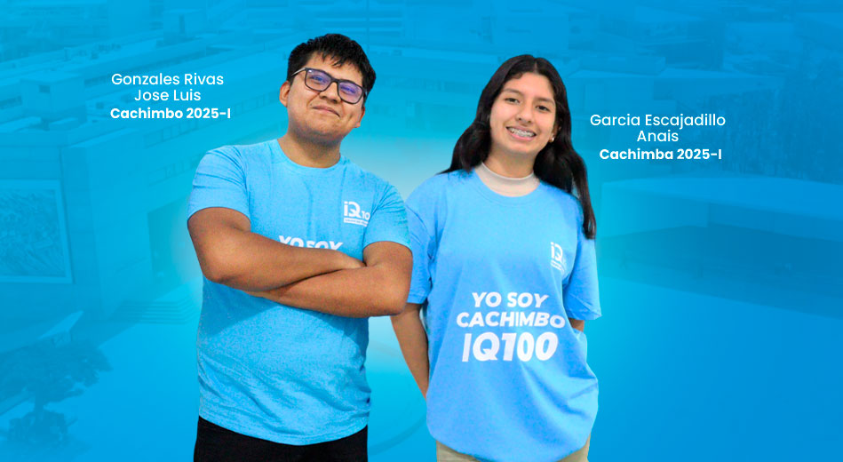
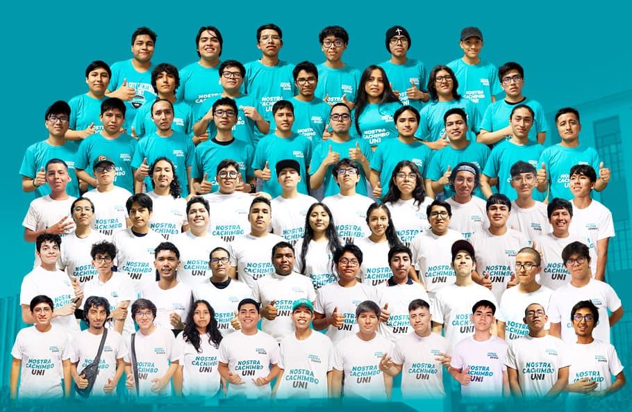

IQ100 es la marca del Grupo de Estudio especializada en postulantes a la Universidad Nacional Mayor de San Marcos. Entrenamos con teoría, práctica, simulacros, seguimiento académico y recursos digitales en Microsoft 365.
Solicitar informes
Formación académica para estudiantes que desean ingresar a la Universidad Nacional Mayor de San Marcos. Nuestro enfoque combina enseñanza por niveles, práctica constante, evaluación y acompañamiento.
Solicita informes y reserva tu vacante por WhatsApp.
MatricúlateConsultar por WhatsAppUNI
Av. Gerardo Unger 193, SMP.
Clases en aulas equipadas, atención personalizada, materiales impresos y práctica constante.
Escoger planAcceso a materiales, flexibilidad horaria, recursos digitales y acompañamiento académico.
Escoger plan
Asegura tu lugar y empieza tu preparación para San Marcos con nosotros.
Matricúlate por WhatsApp